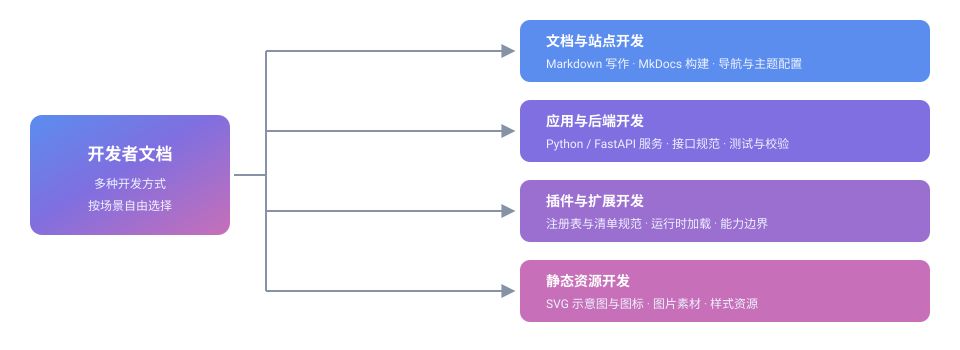
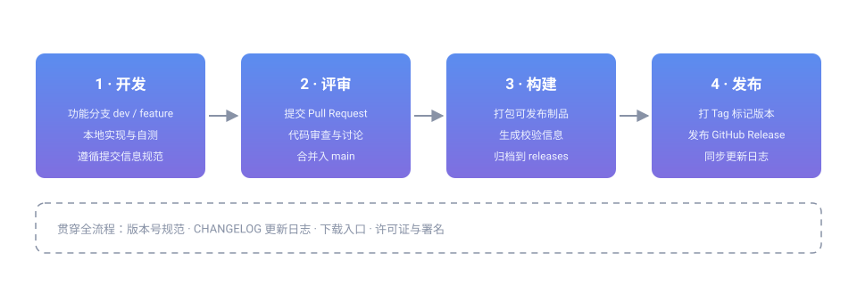

GitHub 开发与软件包发布流程
本教程面向参与社区项目开发的成员，说明在 GitHub 上从写代码到发布一个可用软件包的完整流程。
开发者文档并不局限于 GitHub 这一条路径：本站按「开发方式」组织内容，你可以根据自己的角色和目标选择入口。下图给出全貌。

| 开发方式 | 典型内容 | 入口 |
|---|---|---|
| 文档与站点开发 | Markdown 写作、MkDocs 构建、导航与主题配置 | 环境搭建、Markdown 写作规范、导航与站点配置 |
| 应用与后端开发 | Python / FastAPI 服务、接口规范、测试与校验 | 本文「开发流程」 |
| 插件与扩展开发 | 注册表与清单规范、运行时加载、能力边界 | 本文「开发流程」 |
| 静态资源开发 | SVG 示意图与图标、图片素材、样式资源 | 本文「资源与素材规范」 |
无论选择哪种方式，只要产出需要交给社区使用，最终都会汇入同一条发布链路——这正是本文的重点。
项目来源与主要开发者
| 项目 | 说明 |
|---|---|
| 源仓库 | github.com/EveryOneCreate/EveryoneCreate |
| 主要开发者 | Kevin Station（@Kevincn2010） |
| 许可 | 遵循源仓库所在许可（GPL-3.0） |
| Kevin Station（GitHub 主页） Everyone Create Community（每个人创作社区）主要开发者，负责社区项目与文档体系的设计与维护。 |
头像资源存放在仓库本地目录（
img/user/），不通过外部网络接口加载，详见「资源与素材规范」。
项目概览
本节说明本流程所服务的项目对象，内容对应源仓库的项目文档（源文档代号 GitAAP），语义保持不变。
项目简介
Everyone Create Community（每个人创作社区）的模块化项目，是一个开源的 API 聚合代理服务，专注于 GitHub 仓库数据的采集与可视化。它通过多 Token 调度、智能缓存层和插件化架构，将分散在多个页面的仓库信息整合到一处统一面板。
核心能力
| 能力 | 说明 |
|---|---|
| 仓库数据聚合 | 自动采集仓库流量、发布、Issue、PR 等数据，集中展示 |
| 多 Token 调度 | 同时管理多个访问令牌，按剩余配额自动轮换，用完无缝切换 |
| 智能缓存 | 请求结果按命名空间缓存，减少重复调用，提升响应速度 |
| 插件体系 | 运行时动态加载的功能模块，支持弹窗、外观、验证等扩展 |
| 多语言界面 | 内置简体中文、繁体中文、英文，自动适配 |
| 主题系统 | 12 套色彩方案（琥珀、竹、炭、霜、薰衣草、樱花等） |
| 全异步架构 | 基于 FastAPI + httpx，高效并发处理 |
| 容器化部署 | Docker Compose 编排，一条命令启动 |
AI 辅助开发声明：本项目由 AI 辅助生成，可能存在考虑不周或疏漏之处。如果你发现任何问题或有优化建议，欢迎提交 Issue 或 Pull Request 指点斧正。每一份反馈都是让这个项目变得更好的动力。
许可证
项目以 GPL-3.0 许可发布，版权归属 KevinCN2010（Kevin Station）。使用时请遵循源仓库的许可条款，保留版权声明与许可文本。
环境与部署
部署方式
方式一：Docker Compose（推荐）
git clone https://github.com/EveryOneCreate/EveryoneCreate.git
cd EveryoneCreate
cp .env.example .env
# 编辑 .env 填入 Token 与仓库列表
docker compose up -d
# 访问 http://localhost:4000
方式二：手动部署
python3 -m venv venv
source venv/bin/activate
pip install -r requirements.txt
uvicorn i18n.main:app --host 0.0.0.0 --port 8000 --reload
环境变量
| 变量 | 必需 | 默认值 | 说明 |
|---|---|---|---|
GITHUB_TOKEN |
是 | — | 访问令牌 |
GITHUB_TOKENS |
否 | — | 多令牌模式，名称=Token,名称2=Token2 |
REPOS |
否 | 见下 | 监控仓库，owner/repo 逗号分隔 |
UPDATE_HOURS |
否 | 6 |
更新间隔（小时） |
ADMIN_PASSWORD |
否 | 随机 | 管理后台密码 |
安全提示：Token 属于敏感凭证，请勿写入仓库或提交到版本库；仅通过本地
.env或部署环境的密钥管理注入。
项目结构
模块目录的组成如下，便于按模块定位代码与文档：
gitaap/
├── backend/ # 后端核心
│ ├── app.py # FastAPI 应用入口
│ ├── models/ # 数据库模型
│ ├── services/
│ │ ├── cache.py # 智能缓存
│ │ ├── token_manager.py # 多 Token 调度器
│ │ └── predictor.py # 流量预测
│ └── utils/ # 工具函数
├── i18n/ # 国际化 & 前端
│ ├── main.py # 路由 & 请求处理
│ ├── templates/ # Jinja2 HTML 模板
│ └── static/
│ ├── lang/ # 多语言 JSON
│ ├── themes/ # 12 套主题 CSS
│ ├── plugins/ # 插件系统
│ └── icons/ # SVG 图标库
├── ipapi/ # IP 归属地查询（独立进程）
├── tests/ # 测试用例
├── docker-compose.yml # Docker 编排
├── pyproject.toml # 项目元数据
└── requirements.txt # Python 依赖
插件体系
插件是运行时动态加载的功能模块，目录结构如下：
i18n/static/plugins/
├── registry.json # 插件注册索引
├── core/ # 加载器核心
│ ├── loader.js
│ └── manager.js
└── available/ # 预置插件
├── info-popups/ # 信息弹窗
├── appearance-tools/ # 外观设置
├── captcha-verify/ # 人机验证
├── legal-compliance/ # 法律合规提示
├── repo-mirror/ # 仓库镜像
└── traffic-predict/ # 流量预测
插件通过 registry.json 登记、由加载器在运行时装配；新增插件需同时维护注册索引与清单文件，发布流程与主项目一致（见下文「开发」至「发布」）。
流程总览
开发到发布共四个阶段，前后衔接、可回溯：

| 阶段 | 关键动作 | 产出 |
|---|---|---|
| 1 · 开发 | 拉取分支、实现功能、本地自测 | 可运行的改动 |
| 2 · 评审 | 提交 Pull Request、代码审查、合并 | 合入 main 的代码 |
| 3 · 构建 | 打包、生成校验信息、归档 | 待发布的制品 |
| 4 · 发布 | 打 Tag、创建 Release、同步更新日志 | 对外可下载的软件包 |
1. 开发
准备环境
git clone https://github.com/EveryOneCreate/EveryoneCreate.git
cd EveryoneCreate
# 创建并切换到功能分支，名字要能说明用途
git checkout -b feature/your-feature
分支命名建议使用前缀区分用途：
| 前缀 | 用途 | 示例 |
|---|---|---|
feature/ |
新增功能 | feature/token-rotation |
fix/ |
修复缺陷 | fix/cache-expire |
docs/ |
文档改动 | docs/release-guide |
编写与自测
- 小步提交，一次提交只做一件事，便于回滚与审查
- 提交信息遵循 Conventional Commits：
feat:、fix:、docs:、chore:等 - 提交前在本地跑通测试与静态检查（以源仓库的
pyproject.toml、requirements.txt为准）
# 安装依赖（含开发依赖）
pip install -e ".[dev]"
# 运行测试与静态检查
pytest
ruff check .
ruff format .
2. 评审
git add .
git commit -m "feat: 简述本次改动"
git push origin feature/your-feature
推送后到源仓库页面点击 Compare & pull request 发起 Pull Request：
- 标题一句话概括改动
- 正文写明：改了什么、为什么改、如何验证
- 涉及界面或排版的改动，附上截图或录屏
维护者审查通过后合并入 main。评审意见需要修改时，继续向同一分支提交即可，PR 会自动更新。
3. 构建
合并后即可进入构建阶段。构建的目标是把源码变成可分发、可校验的制品：
| 动作 | 说明 |
|---|---|
| 打包 | 生成源码包或容器镜像等制品 |
| 校验 | 生成校验信息（如哈希值），供使用者核对完整性 |
| 归档 | 把制品放到固定的发布目录或制品库 |
# 以 Python 项目为例：构建源码包与 wheel 包
python -m build
# 生成校验文件，随制品一同发布
sha256sum dist/* > dist/SHA256SUMS
构建产物应可复现：同样的源码与配置，任何人构建都应得到一致的结果。
4. 发布
打 Tag 标记版本
版本号建议遵循语义化版本：主版本.次版本.修订号。
git tag -a v1.0.0 -m "v1.0.0"
git push origin v1.0.0
创建 GitHub Release
- 进入源仓库的 Releases 页面，点击 Draft a new release
- 选择刚推送的 Tag，填写标题与发布说明
- 上传第 3 步构建出的制品与校验文件
- 确认无误后点击 Publish release
发布说明建议包含：新增功能、问题修复、不兼容变更、升级方式。
同步更新日志
发布完成后，把本次版本的内容同步到本站的版本更新日志，让使用者能集中查看每个版本的变化与下载入口。
提示：版本更新日志子站（仓库根目录
release/update/）由维护者管理，其内容生成流程独立于 MkDocs，普通贡献请勿直接改动，见关于本站的注意事项。
资源与素材规范
文档中引用的图片、头像与示意图一律存放在仓库本地、以相对路径引用，不通过外部网络加载。
目录分工
| 目录 | 用途 | 示例 |
|---|---|---|
img/user/ |
用户头像（预留） | img/user/kevin-station.png |
ext/ |
扩展静态资源（预留），其下按类型分子目录 | ext/svg/github-release-flow.svg |
assets/ |
站点主题自带资源，请勿手动改动 | assets/images/favicon.png |
头像
- 头像必须是仓库内的本地文件，禁止调用 Gravatar 等外部头像接口
- 文件名用「英文小写 + 连字符」，与成员一一对应
- 引用时写清替代文字：
<img src="../../img/user/kevin-station.png" alt="Kevin Station" width="64" height="64">
SVG
SVG 不限于按钮，也可以用于示意图、流程图与概念说明。绘制与引用约定：
- 使用
viewBox，并标注role="img"与aria-label（或<title>/<desc>）保证可访问性 - 图形自带配色，不依赖页面 CSS 变量，以兼容站点的明暗两种主题
- 不使用外部字体、外部图片与脚本引用
<img src="../../ext/svg/github-release-flow.svg" alt="发布流程示意图" width="880">
注意：站外图片、站外 SVG 与外部头像接口在本站一律不使用；确需新增资源时，请放入
img/user/或ext/并在导航与站点配置中确认引用路径。
相关阅读
- 环境搭建：本地开发环境与预览
- Markdown 写作规范：文档撰写与资源引用写法
- 提交与上线流程：文档从修改到上线的链路
- 导航与站点配置：站点结构与导航登记